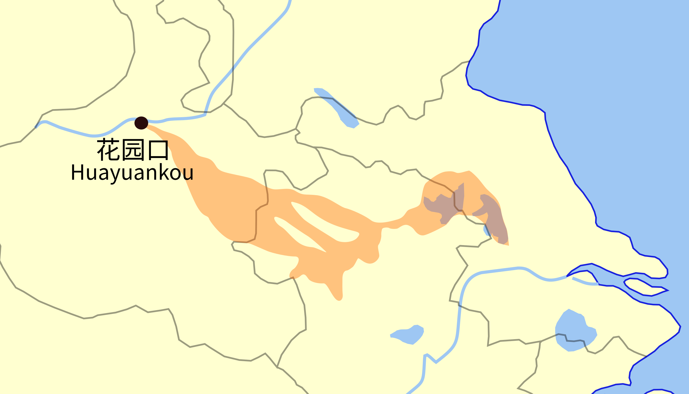

1. 花园口决堤
花园口决堤是发生在1938年6月9日中华民国抗日战争时期的重大灾难。国民政府利用黄河伏汛期间，在河南省花园口镇战略性毁堤，进行焦土政策，试图阻止大日本帝国陆军沿黄河西进。
该事件造成平汉铁路东侧区域水灾，河南、徽北、苏北因洪灾遇难89,300人。除了溺死，更多人是因疾病或饥荒而死，如包含1939年水灾、1942年蝗灾、甚至1943年旱灾中的部分死者，间接造成了30－80余万人死亡。日军方面也出现伤亡，据披露史料和各方估计，该事件间接造成7000－20000名日军伤亡。花园口决堤事件于1980年代才最终被解密，此前国民政府一直称决堤系日军轰炸所致。

1942这部电影把当时河南饥荒百姓逃难的情形拍得很触目惊心。1.1. 焦土政策
焦土政策（英语：Scorched earth，又称焦土作战）译自英语，是一种军事战略。英语直接表达的意思是毁坏地面上所有的一切，包含农作物、工厂和城市，破坏任何可能对敌人有用的东西。汉字中“焦土”的原意烧坏农作物来摧毁敌人的食物来源，这个战术辞汇在现代使用上并不限于使敌人食物缺乏，还可以包括破坏遮蔽所、交通运输、通讯与工业资源。与古称坚壁清野有所不同，坚壁清野指先将可为己所用的资源收集储存于“坚壁”，而后毁坏难以控制地区的资源“清野”。
2. 黄泛区
黄泛区原指1938年6月河南黄河花园口决堤事件后在广大区域形成的黄河泛区。一般认为，此次黄泛区涉及河南东部、安徽北部及江苏北部的44个县级城市。花园口决堤事件使黄泛区当场死亡计8.9万人口，4年后，黄泛区又遭遇1942年河南饥荒。黄河水整整泛滥了8年，直至1946年“黄河归故”。
该词现泛指历史上曾处于黄河泛区的文化区域，包括河南、山东、河北、汾河片、渭河平原、淮北地区、皖北等地。学者认为，黄泛区群众在经历常年的灾荒打击后，其思想观念中某些方面的传统和变异也得到充分的体现，长期影响着黄泛区农民不同时期的生存行为。如21世纪南京安德门、郑州二马路等地农民工劳务市场附近长期流浪露宿的农民工多为黄泛区豫东、皖北籍贯人士。

3. 中国水系